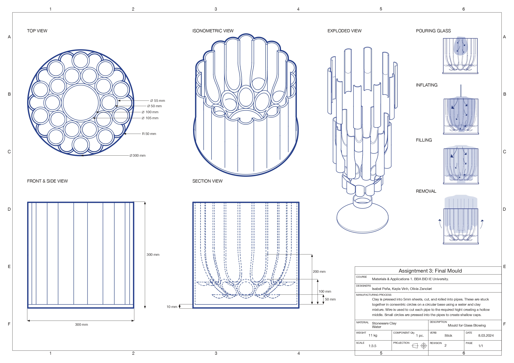

Stick
In collaberation with Isabel Peña and Olivia Zanolori.
Stick Mould explores the relationship between material experimentation and manufacturing through the design of a large-scale clay mould for glass blowing. Developed as part of a materials exploration course, the project began with an investigation into clay and its properties before evolving into a handmade mould inspired by the verb "stick." By joining together a variety of cylindrical forms, we created an organic structure that was later used to produce a blown glass vase.


Project Brief:A glass blown vase that shows clear interaction with foriegn or complex materials and shapes.
Through the creation of seventy-five experimental samples, we explored how clay could be manipulated, joined, textured, and transformed. While several verbs produced interesting results, "stick" emerged as the most compelling. Unlike many materials, clay is inherently designed to adhere to itself using slip, making the concept both physically and conceptually tied to the material.
Redefined Brief:how can the act of 'sticking' create an aggragated shape formed from repetition that still allows for a consistently unique form to develop when used as glass blowing mould.
The challenge was designing a form that could be translated from clay into glass while maintaining the qualities of connection, growth, and adhesion that emerged during our material exploration.

Process
The project began with extensive hands-on experimentation, producing seventyfive clay samples that explored different verbs and manipulations. These tests provided a deeper understanding of clay's behaviour, revealing both its flexibility and its limitations. While clay could be continuously reworked and recycled throughout the process, achieving consistency across larger structures, especially in a set time frame, proved far more difficult than expected.
Constructing the mould required carefully rolling, cutting, and assembling dozens of clay cylinders while maintaining a consistent wall thickness and height. Because of its scale, drying became one of the project's greatest challenges. The mould was large enough that allowing it to dry evenly before firing was extremely difficult, creating a significant risk of cracking or even exploding in the kiln. To manage this uncertainty, we produced two versions: one kiln-fired and one air-dried.
One of the most unexpected moments occurred during the glass blowing process. As molten glass was blown into the air-dried mould, the heat effectively fired portions of the clay upon contact. Anticipating the thermal expansion and stress this would create, we reinforced the mould with chicken wire to prevent it from separating during the process.
Working between clay and glass required an understanding of how materials behave under different conditions, how negative space becomes positive form, and how unpredictability can become an asset rather than a flaw. Most importantly, it demonstrated how material exploration can lead to unexpected outcomes when allowed to drive the design process.
The Pilar Lamp is an adaptive reuse project created from a cabinet belonging to Sergio's mother, Pilar. Following her passing, the cabinet became one of many objects that needed to be removed from her apartment. Too large to be moved intact, the piece had to be cut in half. Rather than allowing it to be discarded, we transformed it into a directional lamp that preserves both the material and memory of the original piece.
Skills: Material Research, Ceramic Fabrication, Glass Forming, Manufacturing Processes, Prototyping, Technical Documentation, Form Development, Negative Space Design, Collaborative Making.
Tools: Clay Modelling, Glass Blowing, Illustrator, Technical Drawing, Physical Prototyping, Kiln Firing, Mold Making.